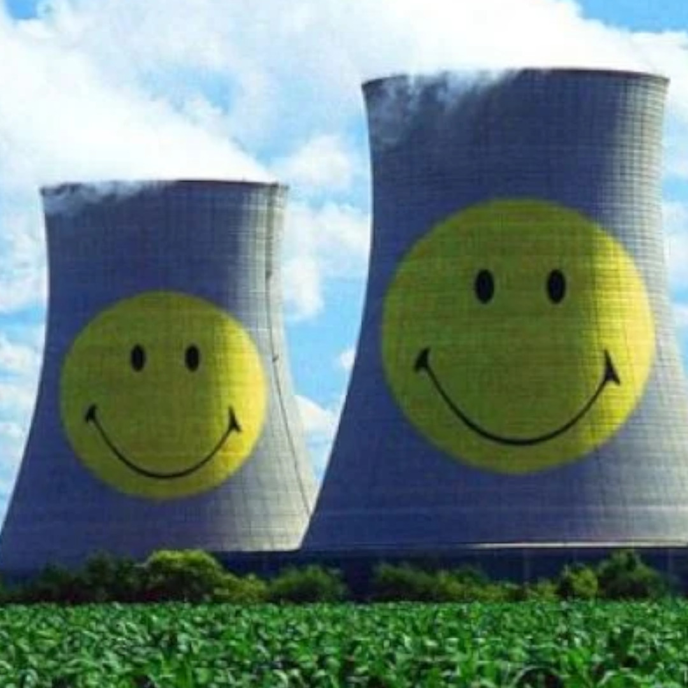

Benefícios da Energia Nuclear

A sustentabilidade é o pilar central que está redefinindo o papel da energia nuclear no século XXI. Para entender como essa tecnologia se alinha às metas globais de preservação ambiental e progresso social, como os Objetivos de Desenvolvimento Sustentável (ODS) da ONU, é preciso olhar para além dos mitos e focar na eficiência física do átomo.
O principal benefício ambiental da energia nuclear é a sua baixíssima pegada de carbono. Durante a operação, uma usina nuclear emite virtualmente zero gases de efeito estufa. Quando analisamos o ciclo de vida completo — desde a mineração do urânio até o desmonte da planta —, suas emissões são comparáveis às da energia eólica e inferiores às da solar fotovoltaica. Isso a torna uma ferramenta indispensável para a descarbonização das matrizes energéticas, permitindo que países reduzam drasticamente sua dependência de combustíveis fósseis.
Além das emissões, a densidade energética é um fator crucial para a sustentabilidade territorial. Diferente das hidrelétricas, que exigem o alagamento de vastas áreas e a destruição de ecossistemas, ou de parques solares e eólicos, que demandam grandes extensões de terra, as centrais nucleares produzem quantidades massivas de eletricidade em áreas geográficas reduzidas. Isso preserva a biodiversidade e permite que o solo seja utilizado para outros fins, como agricultura ou conservação florestal.
Por fim, a sustentabilidade nuclear abrange a estabilidade socioeconômica. Ela oferece uma fonte de "energia de base", que funciona independentemente de condições climáticas, garantindo a segurança energética necessária para o desenvolvimento de nações. Esse setor também fomenta a criação de empregos de alta qualificação e longa duração, promovendo o crescimento econômico sustentável. Ao unir proteção climática, preservação de ecossistemas e resiliência econômica, a energia nuclear se consolida não apenas como uma alternativa, mas como uma fundação necessária para um futuro verdadeiramente verde.